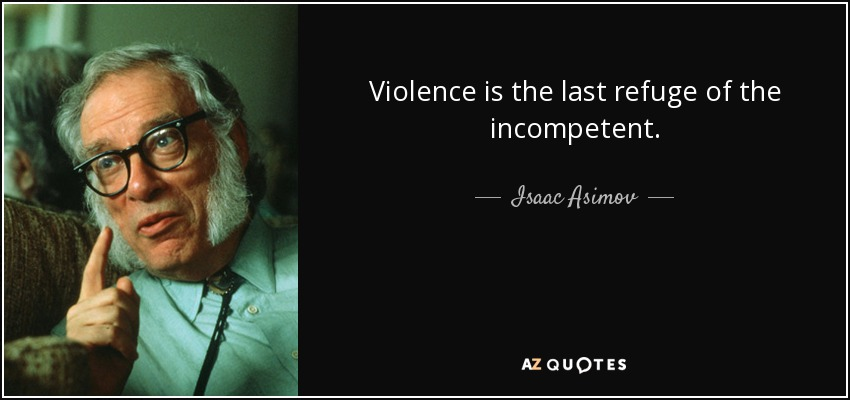

Quotes

Just for fun...from the quote machine himself.
- I have just finished The Cosmic Connection and loved every word of it. You are my idea of a good writer because you have an unmannered style, and when I read what you write, I hear you talking. One thing about the book made me nervous. It was entirely too obvious that you are smarter than I am. I hate that.--In a letter to Carl Sagan, 1973
- Never let your sense of morals get in the way of doing what's right.
- The most exciting phrase to hear in science, the one that heralds new discoveries, is not 'Eureka!' but 'That's funny...'
- If knowledge can create problems, it is not through ignorance that we can solve them.
- The saddest aspect of life right now is that science gathers knowledge faster than society gathers wisdom.
- People who think they know everything are a great annoyance to those of us who do.
- If my doctor told me I had only six minutes to live, I wouldn't brood. I'd type a little faster.
- I don't believe in an afterlife, so I don't have to spend my whole life fearing hell, or fearing heaven even more. For whatever the tortures of hell, I think the boredom of heaven would be even worse.
- Creationists make it sound as though a 'theory' is something you dreamt up after being drunk all night.
- I write for the same reason I breathe - because if I didn't, I would die.
- Part of the inhumanity of the computer is that, once it is competently programmed and working smoothly, it is completely honest.
- Life is pleasant. Death is peaceful. It's the transition that's troublesome.
- Properly read, the Bible is the most potent force for atheism ever conceived.
- I am an atheist, out and out. It took me a long time to say it. I've been an atheist for years and years, but somehow I felt it was intellectually unrespectable to say one was an atheist, because it assumed knowledge that one didn't have. Somehow, it was better to say one was a humanist or an agnostic. I finally decided that I'm a creature of emotion as well as of reason. Emotionally, I am an atheist. I don't have the evidence to prove that God doesn't exist, but I so strongly suspect he doesn't that I don't want to waste my time.
- Intelligence is an accident of evolution, and not necessarily an advantage.
- People think of education as something they can finish.
- There are no nations! There is only humanity. And if we don't come to understand that right soon, there will be no nations, because there will be no humanity.
- I do not fear computers. I fear the lack of them
- It seems to me, Golan, that the advance of civilization is nothing but an exercise in the limiting of privacy.
- Mathematicians deal with large numbers sometimes, but never in their income
- All roads lead to Trantor, and that is where all stars end.
If you want more: Goodreads Asimov